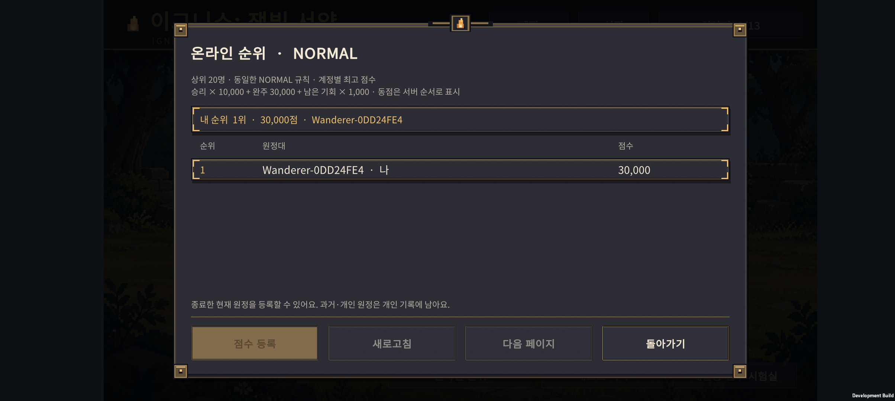
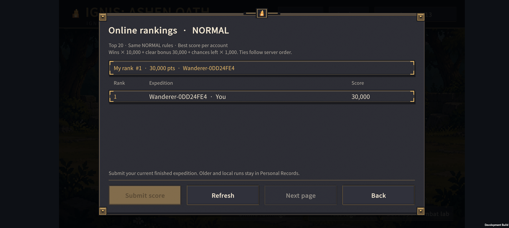

IGNIS: ASHEN OATH · v0.73
같은 규칙으로 겨루는
온라인 원정 순위
2026-11-07 · development 서버 검증 단계
이번에 연결한 것
- Google 로그인 후 상위 20명·내 순위 확인.
- 온라인 시작 / 개인 원정 시작 선택. 전투 규칙은 같은 NORMAL.
- 종료한 현재 원정의 점수 등록과 계정별 최고점 유지.
- GUEST와 기존 개인 기록 유지. Google 이름·이메일 대신 임시 공개 별칭 사용.
점수를 그대로 믿지 않는다
서버가 시작 조건을 발급하고 소환·배치·강화·진화·결합·연구·전투를 다시 계산한다. 앱에서 순위 서비스에 점수를 직접 쓰는 경로는 막았다. 기존 클라우드 백업 데이터는 점수의 신뢰 근거로 쓰지 않는다.
승리 × 10,000 + 완주 30,000 + 남은 기회 × 1,000
현재 점수 공식을 유지하며, 동점은 서버 순서로 표시한다.
Buddy2 실제 서버 확인

화면의 30,000점·1위는 별도 자동 전투로 만든 개발용 검증 기록이다. 실제 사용자 경쟁 결과가 아니다.

검증 결과
- 49개 원정 재현·변조 검사 557개 통과.
- 로컬 저장 150개·90개 체크포인트, 계정 동기화 142개, 한영 번역 4,961개 통과.
- Unity 순위 20개·기존 계정 32개 검사 통과.
- Android와 서버가 30,000점을 동일하게 계산. 등록·반복 등록·내 순위 조회 성공.
- 조작한 승패, 익명 계정의 조회·시작·등록 거부. 순위 서비스 직접 읽기·쓰기 403.
남은 검증
실제 플레이의 온라인 시작→중간 종료→복원→패배/완주→등록 흐름, 30전투 전체의 Android/서버 비교, 두 기기 동시 사용과 오래된 티켓 처리가 다음 단계다. 공개 출시 전에는 닉네임·계정 삭제·개인정보처리방침·정식 OAuth와 사용량/악용 방지를 마무리해야 한다.
현재 원정과 별도의 테스트 인스턴스를 사용했으며 기존 진행은 유지했다. 유료 플랜이나 결제 수단을 활성화하지 않았다.
전체 변경·검증 기록 · 서버 구조와 배포 방법